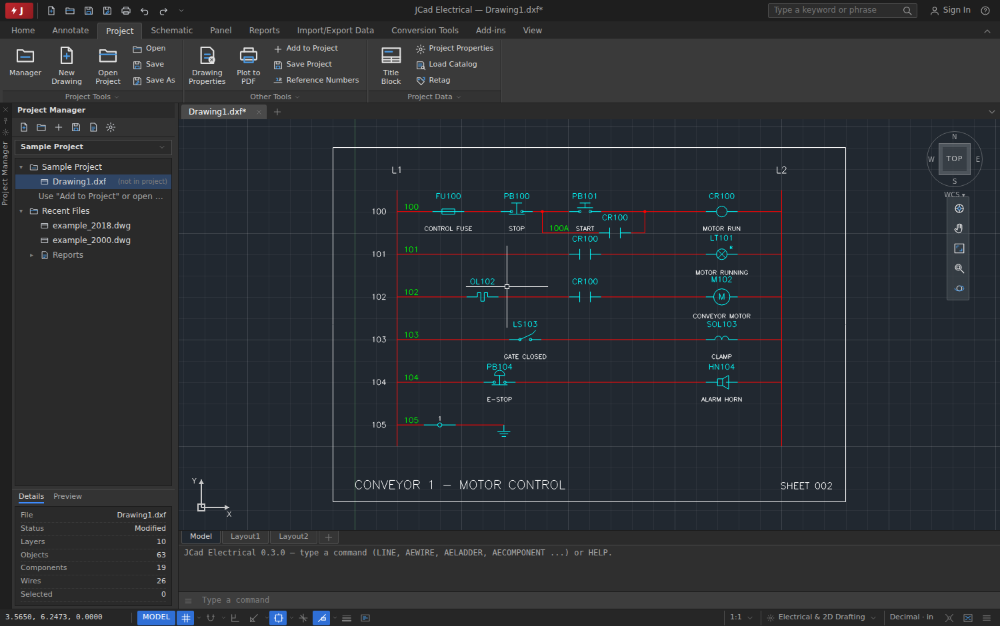
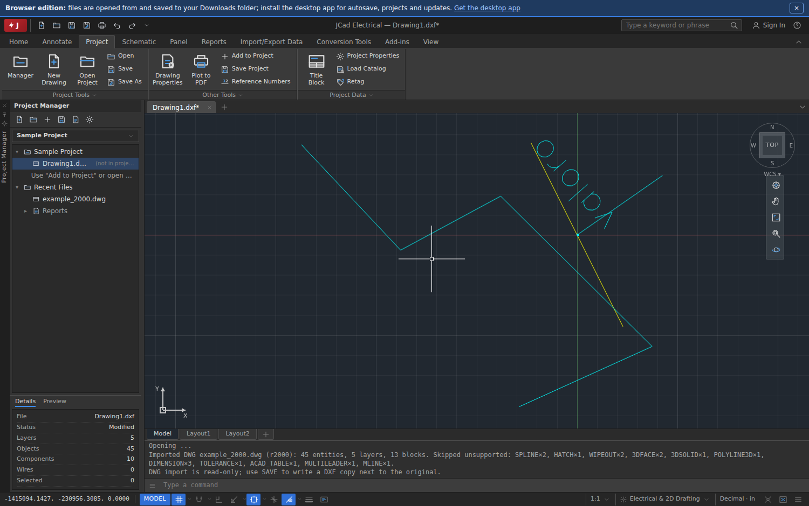
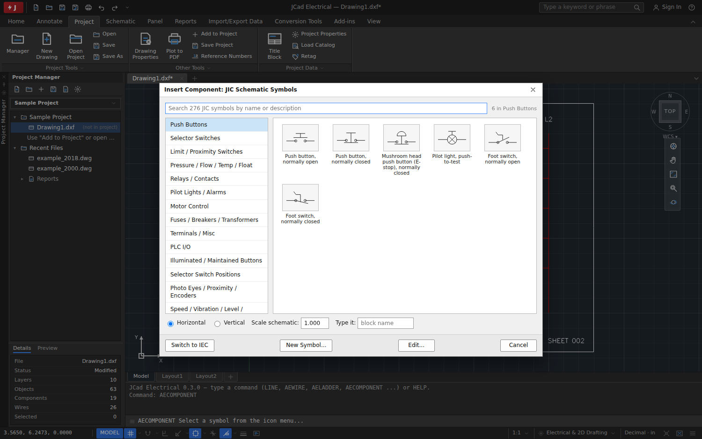
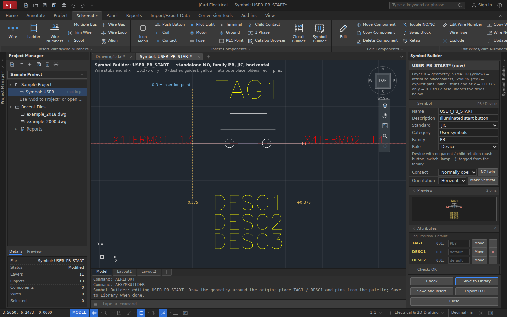
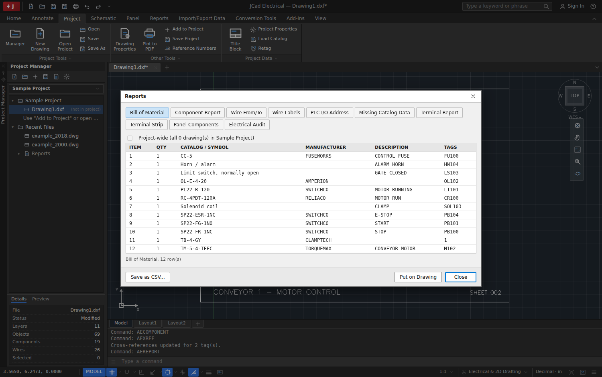
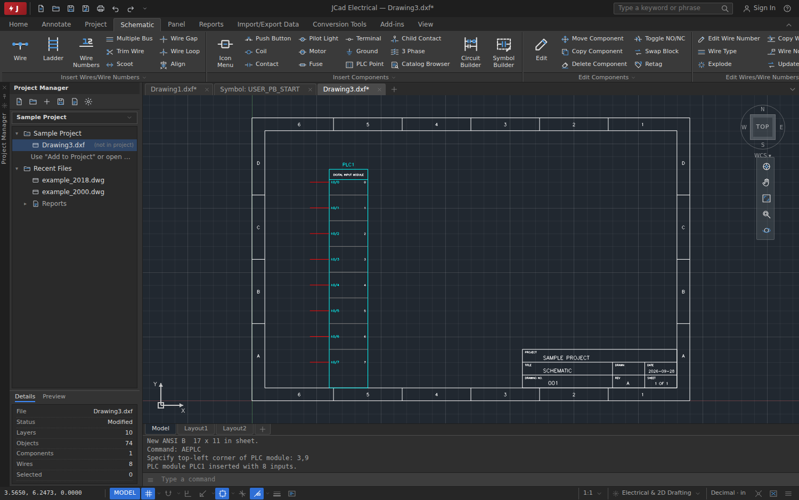

Windows
64-bit installer, updates itself in place.
Windows installer (.exe)Free and open source · Windows, macOS, Linux · runs in your browser too
Free 2D electrical schematic CAD that reads your DWG files and works the way AutoCAD Electrical users expect.
Installers come from the latest GitHub release. All downloads

Ready-made installers for every platform. Version v{{version}}.
64-bit installer, updates itself in place.
Windows installer (.exe)M1, M2, M3, M4 Macs. Disk image.
Apple Silicon (.dmg)Intel Macs. Disk image.
Intel (.dmg)Any distribution, no install, updates itself.
AppImage (x86_64)Package for apt / dpkg.
.deb package (amd64)The GitHub API did not answer (it limits anonymous requests), so the buttons above open the releases page: pick the file for your platform there.
All builds, older versions and update metadata: GitHub Releases.
Depending on your operating system, you may be asked once:
chmod +x jcad-electrical-*.AppImage) or install the .deb with sudo apt install ./jcad-electrical-*.deb.The app checks GitHub Releases for updates a few seconds after it starts and under Help › Check for Updates. Windows and AppImage builds update in place; macOS and .deb builds are told when a newer version exists.
The same program, no install. Open DXF and DWG files from your computer, draw, run reports and save DXF copies to your Downloads folder.
Starts with a sample motor-control ladder. Use Open (Ctrl+O) for your own drawings.
A schematic drafting workspace modelled on AutoCAD Electrical: ribbon, Project Manager, Properties palette, command window, dark model space.
Opens DWG R14 through 2018 with LibreDWG: blocks, attributes, dimensions, linetypes and lineweights. Saves AutoCAD 2000 DXF that other CAD programs read as-is.
Ladders with rung references, orthogonal wires with junction dots, wire numbering by rung, wire types, gaps and jump-over loops, scoot, trim and multi-wire buses.
JIC and IEC 60617 libraries in 52 categories with a searchable icon menu, horizontal and vertical variants, NO/NC twins, 3-pole devices and parent/child cross-referencing.
Draw a symbol or harvest one from a manufacturer DWG, place TAG1, DESC and pin attributes from a palette, run the checker and save it to your own library.
Parametric PLC modules, source and destination signal arrows, Circuit Builder for starters, reversing and jog circuits, terminal strips and panel footprints.
Bill of materials, component, wire, label, PLC, terminal and panel reports per drawing or project, CSV export, tables placed on the drawing and an Electrical Audit with jump-to-error.
Splines, hatches with pattern and solid fills, leaders and multileaders, tables, fields for dates and file names, and formatted multiline text.
Named dimension styles with arrowheads, text placement, tolerances and alternate units, baseline and continued dimensions, all saved in the DXF file.
Cross-references, retagging and wire numbers across every drawing of a project, a Location View, cables and jumpers, PLC I/O from a spreadsheet, report templates and title block mapping.
Enclosures, mounting plates with a grid, DIN rails and wire duct, footprints aligned on a rail, terminal strip footprints and a panel hardware list.
Paper-space layouts with scaled viewports, page setups and a title block wizard, and vector PDF output with one page per layout.
Add your own commands in JavaScript: plugins and scripts read and change the drawing through a documented API, with undo for every change.
Inch or millimetre drawings with symbols scaled to size, DXF text read in its own code page, sharp lines on high-DPI screens and a translatable interface (English, with a partial Spanish translation).
The desktop app checks GitHub Releases for updates and installs them in place on Windows and Linux AppImage. Help › Report a Problem prefills a GitHub issue with diagnostics.
GPL-3.0, built in the open on GitHub. No subscription, no account, no telemetry. All artwork and symbol geometry are original.
Captured from the browser edition. Click a picture to enlarge it.





{{author.title}}
{{author.bio}}
{{author.links}}
Found a bug or missing a feature? Report a problem on GitHub. In the app, Help › Report a Problem collects the version, platform, recent commands and captured errors into a prefilled issue; nothing is sent automatically.